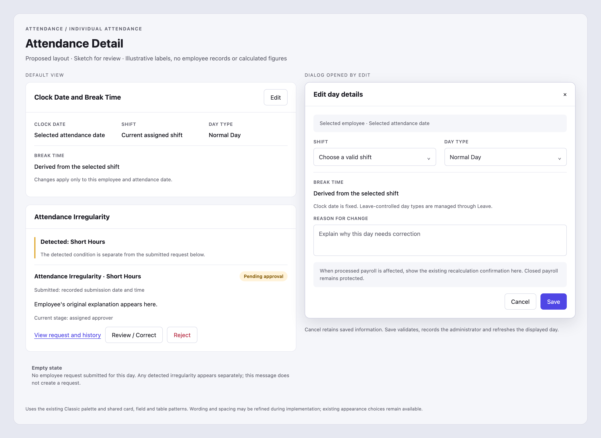
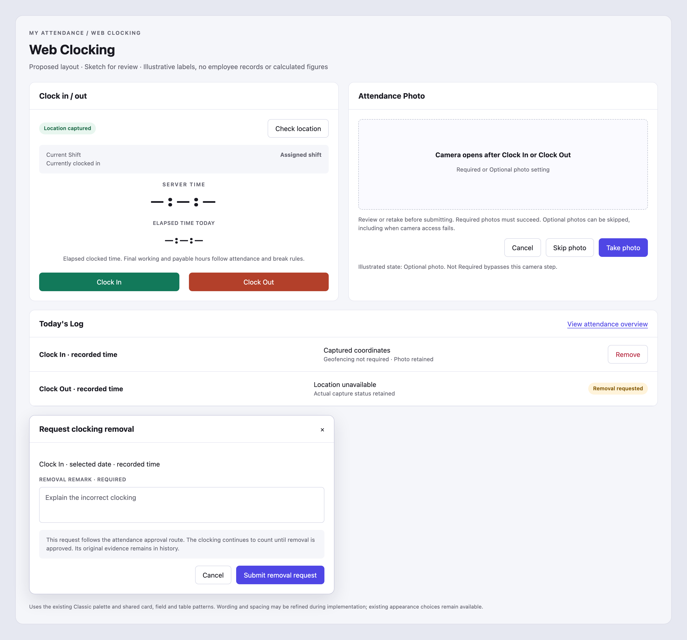
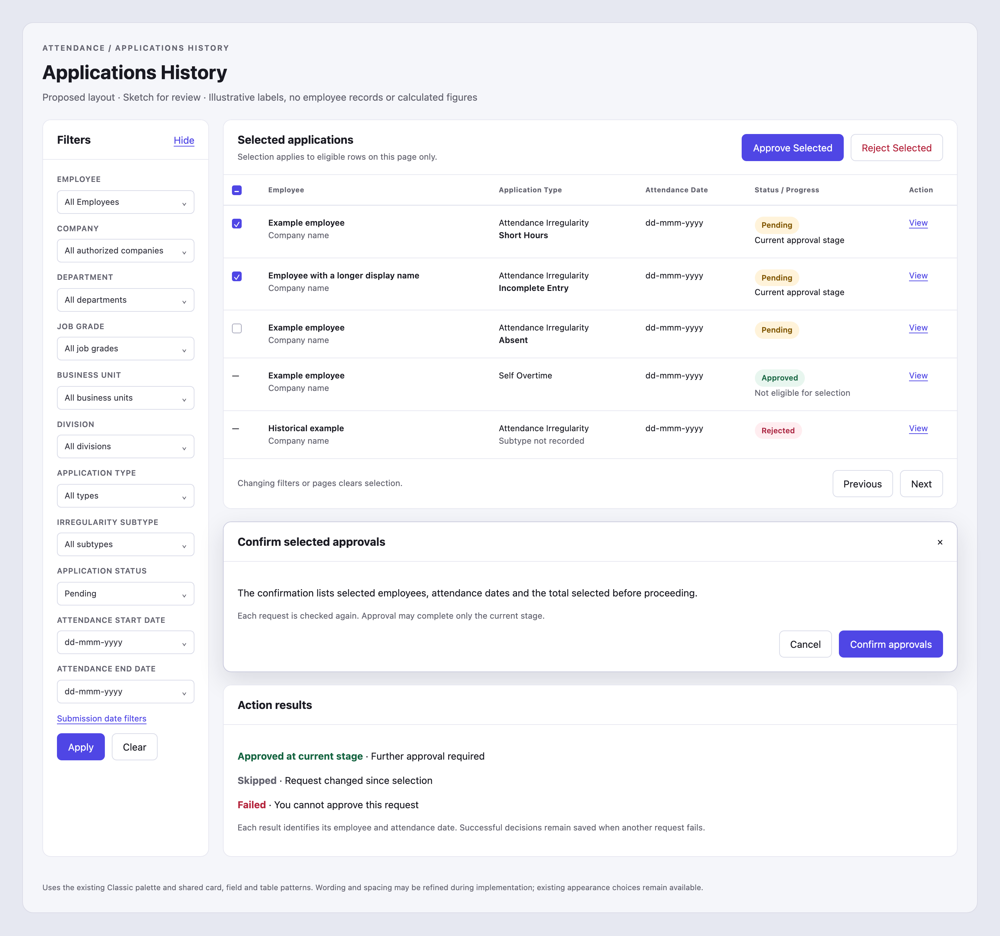
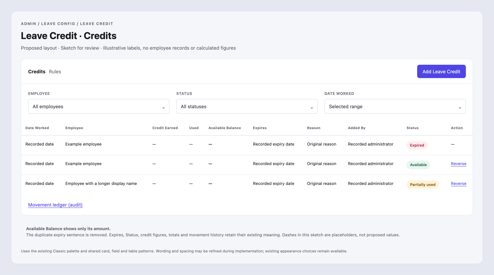

14 October 2026 · Four researched plans and illustrative screen mockups. These are review proposals, not implemented or deployed changes.
VERDICT: Partly there already · SIZE: Moderate THE SITUATION TODAY Correction to the previous plan: date-only Shift and Day Type editing, manual overtime overrides and existing-request links have since been built. Your latest feedback concerns the editing experience and clearer irregularity information. WHAT WE'LL CHANGE - Show Clock Date and Break Time as information by default. Put Edit at the heading's top-right; it opens a dialog containing Shift, Day Type, the required reason and applicable payroll confirmation. - Add Save and Cancel. Cancellation changes nothing; validation errors stay in the dialog. Saving refreshes the day's results, and reopening loads saved values. - Keep the selected date fixed and break time derived from the shift, as today. Leave-controlled day types remain managed through Leave. - Show each request's recorded subtype, submission date, original remarks, status and approval progress. Where an older subtype is missing, say it was not recorded. - Distinguish detected irregularities from employee requests. Show a clear empty state without inventing a request. Existing requests remain visible even when no attendance record exists for that day. - Let permitted administrators correct, approve the current stage or reject with a reason. Keep the same request and history in employee and HR views, identifying the actual administrator. WHAT YOU'LL GET Deliberate editing and clear, consistent irregularity information for the selected employee and day. GOOD TO KNOW Existing overtime controls, approval stages, Leave ownership and payroll protections remain. This does not alter future rosters or shared shift definitions.

BUILD NOTES (technical - skip this if you are reviewing the request) FACT: main application sources match the production sources by checksum. components/attendance-day-editor.tsx already calls saveAttendanceDayChangesAction with the baseline, reason and payroll consent. packs/attendance/day-adjustment.ts already reads attendance_correction by employment and date and attaches the existing workflows. components/attendance-day-applications.tsx omits requestKind, submission date, detected-state context and an empty message. app/attendance/individual/[date]/page.tsx returns early when row is absent, hiding applications despite having fetched them. My Attendance classifies detected days through app/attendance/requests/sections.ts and core/attendance-derive.ts; these are detected conditions, not submitted records. Graph: employment and date own one resolved attendance day; dated schedule overrides affect that day; Leave owns leave; attendance_correction owns the submitted request; attendance_workflow_request owns its approval stages. Keep these owners. Share or extract the canonical classifier without importing a page into a core service. Read stored requestKind for historical subtypes, with an honest unknown fallback. Do not recategorize a submitted request using a newly recalculated day. Do not fabricate requests while rendering detected exceptions. Move the existing schedule form into an accessible dialog with heading, keyboard close, focus return, fresh draft state on each open and pending-save protection. Keep date and derived break read-only. Reuse the existing write action, optimistic baseline, transaction and audit events. Add the header Edit affordance without leaving a second inline editor. Reuse the existing decision owner for approve/reject; never write status directly or impersonate the assigned approver. Preserve amendment, original request and event history. Refresh Attendance Detail, Application History, employee request status and irregularity views after decisions. Acceptance: demonstrate view, open, edit, cancel, save, reopen, validation failure, stale baseline and pending submission; authorized versus unauthorized/self access; Leave-controlled day; processed and closed payroll; unchanged future schedule and overtime overrides. Cover every stored subtype, unknown subtype, no request, detected-only, request without an attendance aggregate, other employee/date exclusion, multiple requests and multi-stage approval/rejection with true actor attribution. Verify the same request ID and status from employee and HR views. Update affected locale messages in all six languages and exercise the actual rendered pages at desktop and mobile widths. UNKNOWN: the live browser walkthrough was blocked by the browser client; source inspection is not evidence of the rendered journey. Complete representative local and authorized live verification before closure, followed by the deterministic release gate and build. No new migration is expected for this scope.
VERDICT: Partly there already · SIZE: Large THE SITUATION TODAY Web Clocking already has a live time counter and tries to capture location without geofencing. Today's Log can hide captured coordinates, Optional photos require another choice, and employees lack a controlled Remove action. WHAT WE'LL CHANGE - Keep the layout. Add Remove for eligible clockings, showing the selected date, direction and time in a confirmation dialog with a mandatory remark. - Route removal through attendance correction approval. Show Removal requested while pending; only final approval excludes the clocking from calculations. Preserve original evidence and history. - Refuse stale, duplicate or payroll-protected removals. If removing one clocking creates a broken sequence, explain why and direct the employee to HR for a coordinated correction; never silently remove another record. - Label the counter Elapsed time today, explain that it is not payable time, and preserve its live updates and recovery after reopening. - Show actual recorded coordinates and any existing location description separately from geofencing. Retain denied, unavailable or timed-out capture explanations for new clockings; do not guess missing historical locations. - Automatically open the camera for Required and Optional photos. Required must succeed; Optional permits Skip and retry; Not Required bypasses the camera. Preserve review and retake. - Retain duplicate-submission protection, including checking an uncertain clocking's result before retrying. WHAT YOU'LL GET Controlled correction requests, clearer elapsed time and location, and photo capture started directly from the clocking buttons. GOOD TO KNOW This uses the existing approval route, not a new immediate-removal policy. Pending removal leaves calculations intact. Geofencing and photo requirements remain enforced independently.

BUILD NOTES (technical - skip this if you are reviewing the request) FACT: app/attendance/clock/clock-client.tsx already updates now every second, syncs with server time, refreshes on visibility/focus, attempts location at submission, and retains an uncertain command and requestId. core/attendance-clock-read.ts computes workedSeconds from active punches and exposes openSince, but its captures omit coordinates and capture-failure reasons. Today's Log uses locationName or geofencingNotRequired. startClock opens the camera only for required photos; optional currently stops at a choice. core/attendance-clock.ts retains available coordinates even when geofencing is off. core/attendance-punch-change.ts preserves voided punches and audit events. requestAttendanceCorrection currently allows clockChanges only for administrators. Graph: attendance_clock_capture owns immutable submission/photo/location evidence; attendance_punch owns active versus voided calculation input; attendance owns the derived day; attendance_correction and its workflow own removal approval. Add a narrow employee-owned removal command, deriving the employee and date from the session and selected owned punch. Do not expose arbitrary clockChanges to self-service or weaken the administrator guard. Server-construct the proposal from an authoritative locked snapshot minus only the selected eligible Web Clocking punch. Reuse the existing correction/workflow/effect/audit owners. Explicitly handle existing corrections and same-day duplicate pending requests. Use a stable removal request identity; re-check current clock-set baseline and dependencies at submission and final approval. Preserve capture evidence and IDs rather than deleting records. The counter is an elapsed active-interval display and must not subtract break rules independently or claim payroll hours. Test same-day multiple intervals, repeated directions, overnight shifts, corrected and removed records, timezone boundaries, refresh, reopened pages and server/browser clock skew. Decide sequence validity using the existing attendance model, including its supported out-first records; prevent removal from introducing a new unresolved dependency and provide the admin correction route. Persist new location capture status separately from geofence enforcement/result and policy snapshot, through the existing command transaction. Browser-reported denied/unavailable status is client-supplied evidence, not trusted proof of permission. Reject contradictory coordinates/status and preserve accuracy. Allocate any append-only migration only after checking the current journal and other reservations; historical absence remains unknown/not recorded. Update native/mobile and quick-clock consumers compatibly when changing shared types or command digests. Show existing location/address only when grounded; do not add an external geocoding provider or fabricate one. Restrict coordinates/photos to the employee and authorized scoped administrators. Acceptance: blank remark refused; cancel does not submit; eligible own punch only; cross-person/company/tenant IDs refused; pending status with unchanged calculation; final approval voids only the target and recomputes through canonical attendance/payroll controls; rejection leaves clocking active; original evidence and true requester/approver remain. Test stale baseline, duplicate retry, dependent pairs, payroll closure, concurrency and corrected-day ownership. Exercise all three photo modes, denied camera, optional skip/retake, denied/unavailable/timed-out GPS, both geofence settings, uncertain network success and repeat clicks. Review employee and administrator location displays and active/removed history. Ensure removal cannot race the normal clock command or duplicate a final effect. UNKNOWN: live browser reproduction was blocked by the browser client. Complete actual saved/reopened local journeys and authorized live checks before closure. Security, payroll-adjacent mutation and possible schema changes require the classifier's full verification, typecheck, production build and any required migration shadow/live-baseline rehearsal. No new immediate-removal policy or broad visual redesign is included.
VERDICT: Partly there already · SIZE: Large THE SITUATION TODAY Applications History has organization and application filters and individual approval/rejection. It still shows technical references and raw attendance dates, lacks subtype labels and bulk actions, and places filters above the table. WHAT WE'LL CHANGE - Add a collapsible left filter panel following Individual Attendance. Include one/all employees, Company, Department, Job Grade, Business Unit, Division, type, subtype, status and attendance Start/End Date. Keep submission-date filters separately labelled. - Preserve filters after viewing or deciding a request. Provide Apply and Clear, plus a compact filter drawer on smaller screens. - Remove the visible reference column and retain View. Show recorded Absent, Short Hours and Incomplete Entry subtypes, Self Overtime and an honest fallback for unknown historical subtypes. - Add checkboxes and Select all eligible on this page, with a selection count. Changing filters or pages clears selection; other pages are never silently included. - Confirm Approve Selected or Reject Selected before processing. Rejection requires remarks. Check each request's current permission, status and approval stage independently. - Report each success, failure or skipped request and its reason, including further approval still required. Record the actual administrator, time and remarks. - Use dd-mmm-yyyy attendance dates in list and detail views, white field-label and table-heading backgrounds, readable text and usable wrapping for long names. WHAT YOU'LL GET Faster filtering and controlled review of selected applications with clear outcomes. GOOD TO KNOW Existing access, self-approval and workflow restrictions remain. Bulk approval only completes the stage the administrator is permitted to decide.

BUILD NOTES (technical - skip this if you are reviewing the request) FACT: app/attendance/application-history/page.tsx renders a top grid of organization, type, status and submittedFrom/submittedTo filters, a reference column and raw attendanceDate. core/attendance-application-history.ts reads one attendance_correction owner plus its workflow and scopes companies with app.is_admin_for; AttendanceHistoryRow lacks requestKind. lib/attendance-history-filter.ts validates existing filters. Detail actions already call decideAttendanceCorrection and require rejection remarks through the UI. Workflow decisions enforce the actual actor and expectedStageIndex. My Attendance persists absent, short_hours, incomplete_entry, self_overtime and other in request_kind. Graph: each selected row is the existing application and current approval stage, not a new batch-owned request. Organization options and employee selections must be scoped to authorized companies. Extend the shared filter contract with employmentId, stored subtype and attendance-date range; retain submission-date filters with explicit labels, real date comparisons and query-string persistence. Use the Individual Attendance filter-shell pattern; inspect its current implementation before reuse. Keep counts and pagination under identical predicates and deterministic ordering. Never derive a historical subtype from the current attendance result or manufacture missing values. Create a bounded bulk decision service/action using the same per-item authorization and canonical decision service as individual actions. Re-read each item's stage/status and pass the expected stage observed when selecting; a duplicate ID or stale item must not advance a later stage. Use independent per-item transactions/results, a bounded selection limit and stable submission protection. No all-matching cross-page action in this scope. Render eligibility explanations but enforce again server-side. Do not trust canDecide or pending alone as complete approval authorization. Existing self-approval, scoped admin, delegation, payroll and workflow restrictions remain authoritative. Record true actor events; report both final and intermediate-stage outcomes accurately. Validate reject remarks server-side as well as in the dialog. Update list and detail date rendering with one date-only formatter, avoiding timezone shifts and preserving sorting/filter semantics. Keep all six locales complete. Use scoped white label/header styling with dark readable text rather than globally changing shared table tokens. Preserve filter state with validated internal return parameters, not arbitrary redirect URLs. Acceptance: every filter alone and in combination, one/all employees, invalid and empty results, subtype unknowns, pagination, cleared selection on navigation, selection eligibility, confirmation/cancel, mixed bulk results, duplicate/stale/malicious IDs, current-stage-only behavior, unauthorized and self records, rejection reason, true actor audit and refresh. Open a record and return to the same list filters. Render long names, many rows, desktop and narrow widths and all appearance themes; ensure the collapsed panel does not cover the table and keyboard access works. Tests must verify stored historical request types and real dates, not simply text in the page source. UNKNOWN: a live browser walkthrough was blocked by the browser client. Complete real local list/detail/decision journeys and an authorized live check before closure, then run the impact classifier's required gate, full repository typecheck and production build. No copied application store or new approval policy is included; no migration is expected unless investigation identifies a concrete storage requirement.
VERDICT: Partly there already · SIZE: Quick THE SITUATION TODAY The supplied Leave Credit attachment shows expiry information repeated beneath Available Balance. The same row already has an Expires column and an Expired status. The extra red line makes the balance harder to scan. WHAT WE'LL CHANGE - Show only the formatted available balance in each row of the Credits tab. - Remove the extra expired-amount and expiry-date sentence beneath that balance. - Keep the Expires column, status, credit earned and used values, totals and movement history available in their existing places. WHAT YOU'LL GET A cleaner Credits table with the balance, expiry date and status each shown in their own column. This only changes what is shown on this table, not any balances, expiry processing or calculations.

BUILD NOTES (technical - skip this if you are reviewing the request) FACT: inspected the submitted Leave Credit -Expires.pdf, including its screenshot. app/admin/leave-config/leave-credit/page.tsx renders formatDays(row.available) followed by a red expiredOn paragraph when row.expired is positive. Adjacent cells already render expiresOn and registerLabels[row.status]. This application source matches production by checksum. Remove only that conditional paragraph from the Available Balance cell. Keep core leave-credit register, expiry writers, ledger, summary values, status computation, column order and formatting unchanged. Do not remove shared expiredOn translations without checking all consumers. No migration or new business rule. Acceptance: render the Credits tab with expired, available, partially used and fully used records. Available Balance is a single formatted amount with no expiredOn sentence; Expires and Status remain visible and accurate. Compare before/after at desktop and narrow widths, with long employee names. Review populated and empty states and ensure existing row actions and movement history remain accessible. Use focused existing leave-credit table/register checks where relevant; no broad new test suite for this presentation-only change. Let the impact classifier choose release coverage, then complete the required typecheck and production build. UNKNOWN: live browser access was blocked by the browser client; the reporter's image and deployed-source match establish the rendering path, not a completed live walkthrough. Verify the changed screen in the local app and on the authorized deployed route before closure.